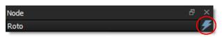
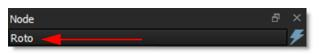
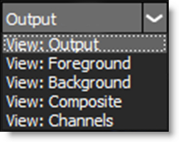

Common Node Controls
There are a number of common node controls that appear in Silhouette. For simplicity they are listed here.
Blur
Horizontal
The image is blurred by a quality blur along the X-axis.
Vertical
The image is blurred by a quality blur along the Y-axis.
Gang
The horizontal and vertical values can be ganged together.
Black and White
Selects the type of black and white filter to be applied to your color image.
Normal
Converts the color image to a monochrome image.
Red
Simulates a red filter in black and white photography.
Green
Simulates a green filter in black and white photography.
Blue
Simulates a blue filter in black and white photography.
Yellow
Simulates a yellow filter in black and white photography.
Orange
Simulates an orange filter in black and white photography.
DOD
Size
Width
Sets the image width.
Height
Sets the image height.
Format
To the right of the size controls is a Format icon which pops-up a list of preset session sizes. Selecting one automatically sets the parameters.
DOD
Left/Top
Left
Sets the left image boundary.
Top
Sets the top image boundary.
Right/Bottom
Right
Sets the right image boundary.
Bottom
Sets the bottom image boundary.
Layer
Uses the selected Layer > Surface to set the DOD dimensions.
Margin
Adds a margin to the boundary of the surface.
Left/Top
Left
Sets the left image boundary.
Top
Sets the top image boundary.
Right/Bottom
Right
Sets the right image boundary.
Bottom
Sets the bottom image boundary.
Grad
Grad is the gradient transition area between the filtered image and the original. Its direction, corners, size and angle can be adjusted.
Enable
Turns the grad on and off.
ND Brightness
Darkens the colored portion of the grad.
Type
Controls the direction of the grad.
Top-to-bottom
The direction of the grad is from top to bottom.
Bottom-to-top
The direction of the grad is from bottom to top.
Left-to-right
The direction of the grad is from left to right.
Right-to-left
The direction of the grad is from right to left.
Horizontal Strip
Horizontal strip grad.
Vertical Strip
Vertical strip grad.
Size
The size of the grad.
Angle
The angle of the grad.
Matte
In some of the nodes, a matte is generated to create the desired effect. The Matte controls consist of Position, Range and Blur parameters, and they work the same in all of the nodes. The white areas of the matte are the areas that will be affected by the node, while the black areas remain unaffected. The matte is extracted based on luminance, in most cases, and is created using the Position and Range parameters.
Position
Selects the values to be included in the matte. A higher Position value shows more white values from the original image as white values in the matte. A lower Position value shows more black values from the original image as white values in the matte.
Range
Controls the range of values to be used for the matte. Once you’ve selected the “Position”, you can then add or subtract the “Range” of values to be included in the matte. A higher Range value includes more white values in the matte while a lower Range value includes less values in the matte.
Blur
The matte is blurred by a quality blur.
Nodes
Disabling Nodes
You can disable a selected node by clicking the lightning bolt icon at the top of the Node parameters. The node will dim in the Trees window when disabled.
This has the same effect as pressing the D key in the Trees window to toggle the enable/disable state of a selected node.
Obey Matte
In the Node window for all nodes, there is an Obey Matte tab with controls that limit the effect of the node based on the node’s obey matte input.
Obey
When enabled, the effect of the node is limited by the alpha channel connected to the obey matte input of the node.
Invert
Inverts the obey matte input.
Opacity
Controls the opacity of the obey matte input.
Channel
Determines which channel to use as the obey matte source.
Red
Uses the red channel.
Green
Uses the green channel.
Blue
Uses the blue channel.
Alpha
Uses the alpha channel.
Luminance
Uses the average luminance of the RGB channels.
Options
In the Node window for all nodes, there is an Options tab containing controls that set various node options.
Node Color
Sets the node color.
Layout
Determines whether the node has a vertical or horizontal layout.
Default
Uses the layout specified in the User Interface > Trees > Layout preference.
Vertical
The node input and output are configured on the top and bottom of the node to accommodate vertical trees.
Horizontal
The node input and output are configured on the sides of the node to accommodate horizontal trees.
Connections
Determines whether the node is connected with a curved or straight line.
Default
Uses the connection type specified in the User Interface > Trees > Connections preference.
Curved
Displays the node connection as a curved line.
Straight
Displays the node connection as a straight line.
Spot
A spot in the form of a radial gradient is used to limit the effect of the node.
Position
There is an on-screen control in the center of the image. By clicking and dragging the on-screen control, the position of the spot can be adjusted.
Position X
The horizontal position of the spot.
Position Y
The vertical position of the spot.
Aspect
The aspect ratio of the spot.
Radius
The un-blurred radius of the spot.
Falloff Radius
The blurred edge radius.
Falloff
Moves the falloff towards the spot center point.
Invert
Inverts the spot.
Renaming Nodes
Nodes can be renamed by changing typing in a new name at the top of the Node parameters window.
Temperature
Color
Sets the color through the use of a standard color picker.
Opacity
Sets the opacity of the warming or cooling.
Preserve Highlights
Preserves the white areas of the image.
Exposure Compensation
Exposure Compensation adds back the brightness loss as a result of the warming or cooling.
Transform
Selects point trackers and tracked layers from the node connected to the Data input for transforming the parameter.
View
Offers various View options for the selected node. The View choices will depend on the node.
The numeric keys can quickly switch the view. For instance, for the Roto node: 1 is Output, 2 is Foreground, 3 is Background, 4 is Color Comp, 5 is Composite and 6 is Channels.